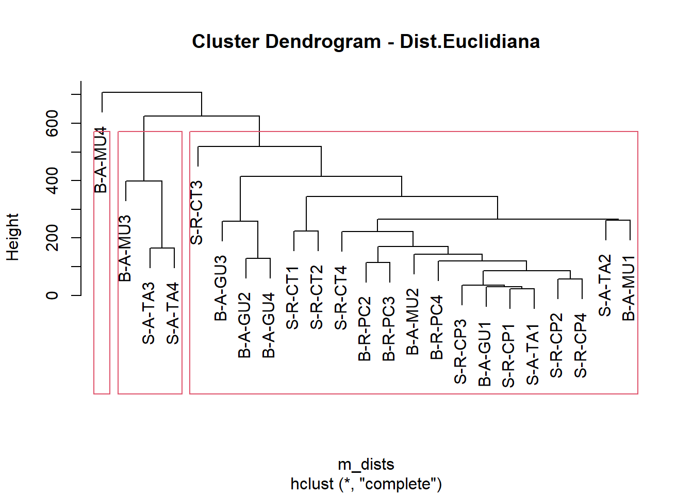
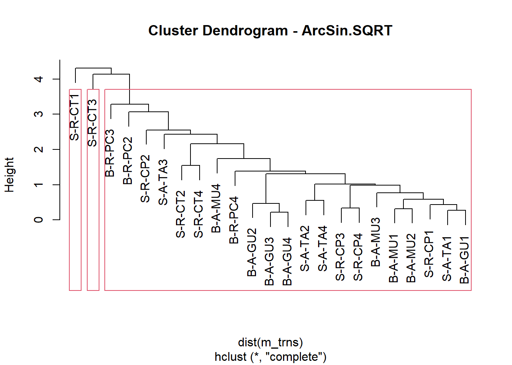

16 R Módulo 7 - Análise de Classificação Hierárquica - SAHN
RESUMO
Análise de Classificação Hierárquica (SAHN) é um método de análise de dados utilizado para identificar grupos ou clusters de objetos com base em sua similaridade. É amplamente utilizada em várias áreas, incluindo bioinformática, análise de dados espaciais, agronomia, entre outros. A análise de classificação hierárquica é uma técnica exploratória importante que pode ajudar a identificar padrões e relações em dados não estruturados. No entanto, é importante lembrar que a interpretação dos resultados pode ser subjetiva e depender do contexto da aplicação.
Apresentação
Análise de Classificação Hierárquica (do inglês, “Hierarchical Agglomerative Clustering Analysis”, ou simplesmente “SAHN”) é um método de análise de dados utilizado para identificar grupos ou “clusters” de objetos com base em sua similaridade. Nessa análise, os objetos são inicialmente considerados como clusters individuais e, em seguida, os objetos mais similares são agrupados em um cluster maior, e assim por diante, até que todos os objetos estejam em um único cluster. Isso resulta em uma árvore hierárquica, conhecida como dendrograma, que mostra a relação de similaridade entre os objetos.
Existem dois tipos principais de classificação hierárquica: aglomerativa e divisiva. O método aglomerativo é mais comum e começa com cada objeto em seu próprio cluster, e sucessivamente agrupa os objetos mais próximos, enquanto o método divisivo começa com todos os objetos em um único cluster e sucessivamente divide-os em grupos menores.
Análises de classificação são amplamente utilizadas em várias áreas, incluindo bioinformática, análise de dados espaciais, agronomia, entre outros. Além disso, pode ser utilizada com diferentes medidas de distância e diferentes métodos de agrupamento, como, por exemplo, o método “complete-linkage”, “single-linkage”, “average-linkage”, entre outros.
A Análise de Classificação Hierárquica é uma técnica exploratória importante que pode ajudar a identificar padrões e relações em dados não estruturados. No entanto, é importante lembrar que a interpretação dos resultados pode ser subjetiva e depender do contexto da aplicação.
16.1 Organização básica
dev.off() #apaga os graficos, se houver algum
rm(list=ls(all=TRUE)) ##LIMPA A MEMORIA
cat("\014") #limpa o console
#rm(list=ls(all=TRUE)); cat("\014"); dev.off() # tudo na mesma linha16.1.1 Pacotes
Instalando os pacotes necessários para esse módulo
install.packages("tidyverse")
install.packages("openxlsx")
install.packages("vegan")
install.packages("dplyr")
install.packages("RColorBrewer")
install.packages("gplots")Os códigos acima, são usados para instalar os pacotes necessários para este módulo. Esses códigos são comandos para instalar pacotes no R. Um pacote é uma coleção de funções, dados e documentação que ampliam as capacidades do R (R CRAN e RStudio). Depois de instalar um pacote, você precisa carregá-lo na sua sessão R com a função library(). Por exemplo, no código acima, carregamos o pacote tidyverse, usando a função library(openxlsx). Isso irá permitir que você use as funções do pacote na sua sessão R. Você precisa carregar um pacote toda vez que iniciar uma nova sessão R e quiser usar um pacote instalado. Os demais pacotes instalados serão carregados ao longo desse tutorial a medida que cada pacote for sendo necessário.
Agora vamos definir o diretório de trabalho. Esse código é usado para obter e definir o diretório de trabalho atual no R. O comando getwd() retorna o caminho do diretório onde o R está lendo e salvando arquivos. O comando setwd() muda esse diretório de trabalho para o caminho especificado entre aspas. No seu caso, você deve ajustar o caminho para o seu próprio diretório de trabalho. Lembre de usar a barra “/” entre os diretórios. E não a contra-barra “\”.
Definindo o diretório de trabalho e instalando os pacotes necessários:
Alternativamente você pode ir na barra de tarefas e escolhes as opções:
SESSION -> SET WORKING DIRECTORY -> CHOOSE DIRECTORY
16.1.2 Sobre os dados do PPBio
A planilha ppbio contém os dados de abundância de espécies em diferentes unidades amostrais (UA’s) (Figura 16.1 (Veja Programa de Pesquisa em Biodiversidade – PPBio). Essa é a matriz bruta de dados, porque os valores ainda não foram ajustados para os valores de Captura Por Unidade de Esforço (CPUE), nem foram relativizados ou transformados.

Figura 16.1: Parte da planilha de dados brutos do PPBio.
16.1.3 Importando a planilha de trabalho
Note que o sómbolo # em programação R significa que o texto que vem depois dele é um comentário e não será executado pelo programa. Isso é útil para explicar o código ou deixar anotações. Ajuste a segunda linha do código abaixo para refletir “C:/Seu/Diretório/De/Trabalho/Planilha.xlsx”.
16.3 Nomenclatura das matrizes em AMD
No tocante aos tipos de atributos e seu tratamento pré-análises, uma matriz de de dados pode ser dos tipos apresentados na tabela 16.1, abaixo.
| Nome | Atributos (colunas) |
|---|---|
| Matriz comunitaria | Os atributos são táxons (ex. espécies, gêneros, morfotipos) |
| Matriz ambiental | Os atributos são dados ambientais (ex. pH, condutividade, temperatura) |
| Matriz bruta | Os atributos ainda não receberam nenhum tipo de tratamento estatísco (valores brutos, como coletados) |
| Matriz transposta | Os atributos foram transpostos para as linhas |
| Matriz relativizada | Os atributos foram relativizados por um critério de tamanho ou de variação (ex. dividir os valores de cada coluna pela soma) |
| Matriz transformada | Foi aplicado um operador matemático a todos os atributos (ex. raiz quadrada, log) |
16.4 Cluster 1: Piloto automático
Aqui fazemos uma Análise Cluster no piloto automático. Não decidimos nenhum dos parâmetros importântes para uma Classificação.
cluster1 <- hclust(dist(m_trab))
plot(cluster1, main = "Cluster Dendrogram - Piloto automatico")
rect.hclust(cluster1, k=3, h = NULL)
#?dist
#?hclustÉ possivel definir uma caixa mostrado os principais grupos formados. Isso pode ser feito estabelecendo quantos grupos se quer mostrar, usando a função k = no. de grupos. Ou pode-se definir os grupos formados até uma determinanda distância, usando a função h = altura dos grupos no eixo das distâncias.
16.4.1 Histórico das fusões
library(dplyr)
cluster1$merge #mostra o histórico das fusões
idrow <- mutate(m_trab, id = row_number()) #cria um df com os numeros das linhas
idrow %>% relocate(id)
#?relocate## [,1] [,2]
## [1,] -2 -3
## [2,] -14 1
## [3,] -8 2
## [4,] -5 -11
## [5,] 3 4
## [6,] -15 -18
## [7,] -21 5
## [8,] -17 -23
## [9,] -16 7
## [10,] -9 -12
## [11,] 6 9
## [12,] -10 11
## [13,] -1 -4
## [14,] -20 8
## [15,] -6 -13
## [16,] 12 15
## [17,] 13 16
## [18,] -19 10
## [19,] 14 17
## [20,] -7 19
## [21,] 18 20
## [22,] -22 21
## id ap-davis as-bimac as-fasci ch-bimac ci-ocela ci-orien co-macro
## S-R-CT1 1 0 194 55 0 0 5 0
## S-R-CP1 2 0 19 0 0 0 0 0
## S-A-TA1 3 0 23 1 13 0 0 0
## S-R-CT2 4 0 142 3 3 0 69 0
## S-R-CP2 5 0 5 1 0 40 9 0
## S-A-TA2 6 0 46 0 178 0 0 0
## S-R-CT3 7 0 206 64 0 0 25 0
## S-R-CP3 8 0 16 0 0 13 24 0
## S-A-TA3 9 0 234 7 238 0 0 2
## S-R-CT4 10 0 0 1 0 0 5 0
## S-R-CP4 11 0 0 0 0 11 6 0
## S-A-TA4 12 0 394 0 273 0 0 0
## B-A-MU1 13 0 12 0 0 0 0 0
## B-A-GU1 14 0 2 2 0 0 0 0
## B-R-PC2 15 5 44 0 0 2 0 0
## B-A-MU2 16 0 99 0 0 0 0 0
## B-A-GU2 17 0 0 0 0 0 0 0
## B-R-PC3 18 22 75 7 0 4 0 0
## B-A-MU3 19 0 511 0 0 0 0 0
## B-A-GU3 20 0 6 0 0 0 0 0
## B-R-PC4 21 0 7 17 0 0 0 0
## B-A-MU4 22 0 235 0 0 0 0 0
## B-A-GU4 23 0 13 0 0 0 0 0
## co-heter cr-menez cu-lepid cy-gilbe ge-brasi he-margi ho-malab hy-pusar
## S-R-CT1 1 14 0 0 3 0 1 9
## S-R-CP1 0 0 0 0 0 0 5 2
## S-A-TA1 0 0 0 0 0 0 0 0
## S-R-CT2 0 4 0 0 0 1 17 43
## S-R-CP2 0 0 0 0 0 0 10 2
## S-A-TA2 0 0 0 0 0 0 2 0
## S-R-CT3 0 8 0 0 1 0 31 11
## S-R-CP3 0 0 0 0 0 0 4 0
## S-A-TA3 0 0 0 0 0 0 20 0
## S-R-CT4 0 1 0 50 3 1 4 3
## S-R-CP4 0 0 0 0 0 0 2 0
## S-A-TA4 0 1 0 0 1 0 9 0
## B-A-MU1 0 0 0 0 190 0 0 0
## B-A-GU1 0 0 0 0 7 0 0 0
## B-R-PC2 0 0 0 0 8 0 0 0
## B-A-MU2 0 0 0 0 67 0 1 0
## B-A-GU2 0 0 0 0 23 0 0 0
## B-R-PC3 0 0 21 0 16 0 2 1
## B-A-MU3 0 0 0 0 145 0 0 0
## B-A-GU3 0 0 0 0 32 0 0 0
## B-R-PC4 0 0 0 81 5 0 1 0
## B-A-MU4 0 0 0 0 509 0 0 0
## B-A-GU4 0 0 0 0 10 0 0 0
## le-melan le-piau le-taeni mo-costa mo-lepid or-nilot pa-manag pimel-sp
## S-R-CT1 0 3 0 0 39 36 0 6
## S-R-CP1 0 0 0 0 0 0 0 0
## S-A-TA1 0 0 0 0 0 0 0 0
## S-R-CT2 0 1 0 0 1 77 0 0
## S-R-CP2 0 3 0 0 0 0 0 0
## S-A-TA2 0 0 0 0 0 0 0 0
## S-R-CT3 0 2 0 0 0 138 0 0
## S-R-CP3 0 1 0 0 0 0 0 0
## S-A-TA3 0 0 0 0 0 0 0 0
## S-R-CT4 0 0 0 0 0 73 0 0
## S-R-CP4 0 2 0 0 0 0 0 0
## S-A-TA4 0 2 0 0 0 1 0 0
## B-A-MU1 0 0 0 0 0 6 0 0
## B-A-GU1 0 0 0 0 0 3 11 0
## B-R-PC2 2 0 1 0 0 5 0 0
## B-A-MU2 0 0 0 0 0 1 0 0
## B-A-GU2 0 0 0 0 0 36 102 0
## B-R-PC3 0 0 0 1 0 65 0 0
## B-A-MU3 0 0 0 0 0 11 0 0
## B-A-GU3 0 0 0 0 0 247 250 0
## B-R-PC4 0 1 0 0 0 9 0 0
## B-A-MU4 0 0 0 0 0 1 0 0
## B-A-GU4 0 0 0 0 0 129 190 0
## po-retic po-vivip pr-brevi ps-rhomb ps-genise se-heter se-piaba
## S-R-CT1 0 47 5 0 0 40 68
## S-R-CP1 0 15 0 0 0 14 0
## S-A-TA1 0 0 1 0 0 4 0
## S-R-CT2 20 221 15 0 0 60 0
## S-R-CP2 0 32 5 0 0 0 0
## S-A-TA2 0 0 2 0 0 0 0
## S-R-CT3 5 326 164 1 1 38 0
## S-R-CP3 0 10 0 0 0 0 0
## S-A-TA3 0 0 0 0 0 0 0
## S-R-CT4 0 28 59 0 0 3 0
## S-R-CP4 0 80 0 0 0 3 0
## S-A-TA4 0 0 3 0 0 0 0
## B-A-MU1 0 0 0 0 0 0 0
## B-A-GU1 0 0 0 0 0 0 0
## B-R-PC2 0 0 9 0 0 10 0
## B-A-MU2 10 8 0 0 0 0 0
## B-A-GU2 0 0 0 0 0 0 0
## B-R-PC3 0 0 6 0 0 93 0
## B-A-MU3 46 48 1 0 0 0 0
## B-A-GU3 0 0 0 0 0 0 0
## B-R-PC4 0 0 0 0 0 31 0
## B-A-MU4 266 163 0 0 0 0 0
## B-A-GU4 0 0 0 0 0 0 0
## se-spilo st-noton sy-marmo te-chalc tr-signa
## S-R-CT1 0 1 0 0 18
## S-R-CP1 0 0 0 0 0
## S-A-TA1 0 0 0 0 0
## S-R-CT2 0 25 0 0 15
## S-R-CP2 0 0 1 0 0
## S-A-TA2 0 0 0 0 0
## S-R-CT3 1 115 0 0 7
## S-R-CP3 0 0 0 0 0
## S-A-TA3 0 0 0 0 0
## S-R-CT4 0 64 0 0 141
## S-R-CP4 0 0 0 0 0
## S-A-TA4 0 0 0 0 0
## B-A-MU1 0 0 0 0 0
## B-A-GU1 0 0 0 0 0
## B-R-PC2 0 0 0 76 23
## B-A-MU2 0 0 0 0 0
## B-A-GU2 0 0 0 0 0
## B-R-PC3 0 0 0 58 0
## B-A-MU3 0 0 0 0 0
## B-A-GU3 0 0 0 0 0
## B-R-PC4 0 0 0 0 4
## B-A-MU4 0 0 0 0 0
## B-A-GU4 0 0 0 0 016.4.1.1 Alguns ajustes para melhorar a visualização
merge <- as.data.frame(cluster1$merge)
merge[nrow(merge)+1,] = c("0","0")
merge
uas <- as.data.frame(rownames_to_column(m_trab,var = "UAs"))
uas
merges <- cbind(uas[c("UAs")], merge)
merges## V1 V2
## 1 -2 -3
## 2 -14 1
## 3 -8 2
## 4 -5 -11
## 5 3 4
## 6 -15 -18
## 7 -21 5
## 8 -17 -23
## 9 -16 7
## 10 -9 -12
## 11 6 9
## 12 -10 11
## 13 -1 -4
## 14 -20 8
## 15 -6 -13
## 16 12 15
## 17 13 16
## 18 -19 10
## 19 14 17
## 20 -7 19
## 21 18 20
## 22 -22 21
## 23 0 0
## UAs ap-davis as-bimac as-fasci ch-bimac ci-ocela ci-orien co-macro
## 1 S-R-CT1 0 194 55 0 0 5 0
## 2 S-R-CP1 0 19 0 0 0 0 0
## 3 S-A-TA1 0 23 1 13 0 0 0
## 4 S-R-CT2 0 142 3 3 0 69 0
## 5 S-R-CP2 0 5 1 0 40 9 0
## 6 S-A-TA2 0 46 0 178 0 0 0
## 7 S-R-CT3 0 206 64 0 0 25 0
## 8 S-R-CP3 0 16 0 0 13 24 0
## 9 S-A-TA3 0 234 7 238 0 0 2
## 10 S-R-CT4 0 0 1 0 0 5 0
## 11 S-R-CP4 0 0 0 0 11 6 0
## 12 S-A-TA4 0 394 0 273 0 0 0
## 13 B-A-MU1 0 12 0 0 0 0 0
## 14 B-A-GU1 0 2 2 0 0 0 0
## 15 B-R-PC2 5 44 0 0 2 0 0
## 16 B-A-MU2 0 99 0 0 0 0 0
## 17 B-A-GU2 0 0 0 0 0 0 0
## 18 B-R-PC3 22 75 7 0 4 0 0
## 19 B-A-MU3 0 511 0 0 0 0 0
## 20 B-A-GU3 0 6 0 0 0 0 0
## 21 B-R-PC4 0 7 17 0 0 0 0
## 22 B-A-MU4 0 235 0 0 0 0 0
## 23 B-A-GU4 0 13 0 0 0 0 0
## co-heter cr-menez cu-lepid cy-gilbe ge-brasi he-margi ho-malab hy-pusar
## 1 1 14 0 0 3 0 1 9
## 2 0 0 0 0 0 0 5 2
## 3 0 0 0 0 0 0 0 0
## 4 0 4 0 0 0 1 17 43
## 5 0 0 0 0 0 0 10 2
## 6 0 0 0 0 0 0 2 0
## 7 0 8 0 0 1 0 31 11
## 8 0 0 0 0 0 0 4 0
## 9 0 0 0 0 0 0 20 0
## 10 0 1 0 50 3 1 4 3
## 11 0 0 0 0 0 0 2 0
## 12 0 1 0 0 1 0 9 0
## 13 0 0 0 0 190 0 0 0
## 14 0 0 0 0 7 0 0 0
## 15 0 0 0 0 8 0 0 0
## 16 0 0 0 0 67 0 1 0
## 17 0 0 0 0 23 0 0 0
## 18 0 0 21 0 16 0 2 1
## 19 0 0 0 0 145 0 0 0
## 20 0 0 0 0 32 0 0 0
## 21 0 0 0 81 5 0 1 0
## 22 0 0 0 0 509 0 0 0
## 23 0 0 0 0 10 0 0 0
## le-melan le-piau le-taeni mo-costa mo-lepid or-nilot pa-manag pimel-sp
## 1 0 3 0 0 39 36 0 6
## 2 0 0 0 0 0 0 0 0
## 3 0 0 0 0 0 0 0 0
## 4 0 1 0 0 1 77 0 0
## 5 0 3 0 0 0 0 0 0
## 6 0 0 0 0 0 0 0 0
## 7 0 2 0 0 0 138 0 0
## 8 0 1 0 0 0 0 0 0
## 9 0 0 0 0 0 0 0 0
## 10 0 0 0 0 0 73 0 0
## 11 0 2 0 0 0 0 0 0
## 12 0 2 0 0 0 1 0 0
## 13 0 0 0 0 0 6 0 0
## 14 0 0 0 0 0 3 11 0
## 15 2 0 1 0 0 5 0 0
## 16 0 0 0 0 0 1 0 0
## 17 0 0 0 0 0 36 102 0
## 18 0 0 0 1 0 65 0 0
## 19 0 0 0 0 0 11 0 0
## 20 0 0 0 0 0 247 250 0
## 21 0 1 0 0 0 9 0 0
## 22 0 0 0 0 0 1 0 0
## 23 0 0 0 0 0 129 190 0
## po-retic po-vivip pr-brevi ps-rhomb ps-genise se-heter se-piaba se-spilo
## 1 0 47 5 0 0 40 68 0
## 2 0 15 0 0 0 14 0 0
## 3 0 0 1 0 0 4 0 0
## 4 20 221 15 0 0 60 0 0
## 5 0 32 5 0 0 0 0 0
## 6 0 0 2 0 0 0 0 0
## 7 5 326 164 1 1 38 0 1
## 8 0 10 0 0 0 0 0 0
## 9 0 0 0 0 0 0 0 0
## 10 0 28 59 0 0 3 0 0
## 11 0 80 0 0 0 3 0 0
## 12 0 0 3 0 0 0 0 0
## 13 0 0 0 0 0 0 0 0
## 14 0 0 0 0 0 0 0 0
## 15 0 0 9 0 0 10 0 0
## 16 10 8 0 0 0 0 0 0
## 17 0 0 0 0 0 0 0 0
## 18 0 0 6 0 0 93 0 0
## 19 46 48 1 0 0 0 0 0
## 20 0 0 0 0 0 0 0 0
## 21 0 0 0 0 0 31 0 0
## 22 266 163 0 0 0 0 0 0
## 23 0 0 0 0 0 0 0 0
## st-noton sy-marmo te-chalc tr-signa
## 1 1 0 0 18
## 2 0 0 0 0
## 3 0 0 0 0
## 4 25 0 0 15
## 5 0 1 0 0
## 6 0 0 0 0
## 7 115 0 0 7
## 8 0 0 0 0
## 9 0 0 0 0
## 10 64 0 0 141
## 11 0 0 0 0
## 12 0 0 0 0
## 13 0 0 0 0
## 14 0 0 0 0
## 15 0 0 76 23
## 16 0 0 0 0
## 17 0 0 0 0
## 18 0 0 58 0
## 19 0 0 0 0
## 20 0 0 0 0
## 21 0 0 0 4
## 22 0 0 0 0
## 23 0 0 0 0
## UAs V1 V2
## 1 S-R-CT1 -2 -3
## 2 S-R-CP1 -14 1
## 3 S-A-TA1 -8 2
## 4 S-R-CT2 -5 -11
## 5 S-R-CP2 3 4
## 6 S-A-TA2 -15 -18
## 7 S-R-CT3 -21 5
## 8 S-R-CP3 -17 -23
## 9 S-A-TA3 -16 7
## 10 S-R-CT4 -9 -12
## 11 S-R-CP4 6 9
## 12 S-A-TA4 -10 11
## 13 B-A-MU1 -1 -4
## 14 B-A-GU1 -20 8
## 15 B-R-PC2 -6 -13
## 16 B-A-MU2 12 15
## 17 B-A-GU2 13 16
## 18 B-R-PC3 -19 10
## 19 B-A-MU3 14 17
## 20 B-A-GU3 -7 19
## 21 B-R-PC4 18 20
## 22 B-A-MU4 -22 21
## 23 B-A-GU4 0 016.5 Cluster 2: Criando a matriz de distâncias Euclidiana
m_dists <- dist(m_trab, method = "euclidean",
diag = TRUE,
upper = FALSE)
#m_dists
cluster2 <- hclust(m_dists, method = "complete") #método de fusão
plot (cluster2, main = "Cluster Dendrogram - Dist.Euclidiana")
rect.hclust(cluster2, k = 3)
#?dist
#?hclust
O significado do argumento method = da função dist() usada no códico acima, depende do contexto em que ela é usada.
A função
dist()no R é usada para calcular as distâncias entre as observações em um conjunto de dados. Essa função tem vários métodos de cálculo de distância, que podem ser especificados pelo argumentomethod =, a exemplo de “euclidean”, “manhattan”, “canberra”, entre outras.Quando o argumento
method =é usado em conjunto com a funçãohclust(), como no código acima, para realizar uma análise de classificação (ou cluster) hierárquica, então ela passa a representar um método de fusão, a exemplo de UPGMA, “nearest neighbour”, “furtherst neighbour”, entre outros.
A tabela 16.2 resume os métodos de fusão disponiveis na função hclust().
| Method= | Método de fusão |
|---|---|
| ward.D | Método de Ward com variância mínima |
| ward.D2 | Método de Ward com variância mínima ajustada |
| single | Método de ligação simples (vizinho mais próximo) |
| complete | Método de ligação completa (vizinho mais distante) |
| average | Método de ligação baseado na média, equivale ao UPGMA |
| mcquitty | Método de ligação de McQuitty, equivale ao WPGMA |
| median | Método de ligação baseado na mediana, ou WPGMC |
| centroid | Método de ligação baseado no centróide, ou UPGMC |

16.6 Cluster 3: Relativização pelo total da coluna
16.7 Cluster 4: Transformação pelo arcoseno da raiz quadrada
Agora aplicaremos a transformação do arcoseno da raiz quadrada na matriz relativizada por colunas. Lembre que em ambas as matrizes entramos dados que variam entre 0 e 1, e os resutados retornados também variam entre 0 e 1, mas em um nível de compressão de valores extremos mais desejável. Usaremos a matriz relativizada/transformada para fazermos a proxima classificação.
16.7.1 Gráfico de clustering relativizado/transformado
Aqui fazemos uma Análise Cluster no piloto automático, para comparar com os resultados da primeira classificação, que não havia sido relativizada/transformada.
cluster4 <- hclust(dist(m_trns))
plot(cluster4, main = "Cluster Dendrogram - ArcSin.SQRT")
rect.hclust(cluster4, k = 3)
16.8 Cluster 5: Controle total dos parâmetros
vegdist <- vegdist(m_trns, method = "bray",
diag = TRUE,
upper = FALSE)
as.matrix(vegdist)[1:7, 1:7]
cluster5 <- hclust(vegdist, method = "average")
plot(cluster5, main = "Cluster Dendrogram - Bray-Curtis")
rect.hclust(cluster5, k = 3, h = NULL) 
#h = 0.8 fornece os grupos formados na altura h
#vegdist
cluster5$merge
cluster5$height
idrow <- mutate(m_trns, id = row_number())
idrow %>% relocate(id)## S-R-CT1 S-R-CP1 S-A-TA1 S-R-CT2 S-R-CP2 S-A-TA2 S-R-CT3
## S-R-CT1 0.0000000 0.8743721 0.9338269 0.6274997 0.8106894 0.9420728 0.6582219
## S-R-CP1 0.8743721 0.0000000 0.6833816 0.7759468 0.7726098 0.7342613 0.8672111
## S-A-TA1 0.9338269 0.6833816 0.0000000 0.8789631 0.9178304 0.5700984 0.9404687
## S-R-CT2 0.6274997 0.7759468 0.8789631 0.0000000 0.7280378 0.8836068 0.5169933
## S-R-CP2 0.8106894 0.7726098 0.9178304 0.7280378 0.0000000 0.8915271 0.8012846
## S-A-TA2 0.9420728 0.7342613 0.5700984 0.8836068 0.8915271 0.0000000 0.9412636
## S-R-CT3 0.6582219 0.8672111 0.9404687 0.5169933 0.8012846 0.9412636 0.0000000
## [,1] [,2]
## [1,] -20 -23
## [2,] -8 -11
## [3,] -17 1
## [4,] -19 -22
## [5,] -6 -12
## [6,] -4 -10
## [7,] -16 4
## [8,] -5 2
## [9,] -13 7
## [10,] -9 5
## [11,] -7 6
## [12,] -14 3
## [13,] -2 -3
## [14,] -1 11
## [15,] -15 -18
## [16,] -21 14
## [17,] 10 13
## [18,] 9 12
## [19,] 8 16
## [20,] 17 19
## [21,] 15 20
## [22,] 18 21
## [1] 0.1402400 0.2637008 0.2827470 0.3726150 0.4095558 0.4631145 0.4766705
## [8] 0.5326053 0.5584043 0.5683644 0.5934519 0.6112108 0.6833816 0.6834576
## [15] 0.6881517 0.7475412 0.7570089 0.7899914 0.8037471 0.8465927 0.8855551
## [22] 0.9099458
## id ap-davis as-bimac as-fasci ch-bimac ci-ocela ci-orien
## S-R-CT1 1 0.000000 0.29580113 0.63106017 0.00000000 0.0000000 0.1880966
## S-R-CP1 2 0.000000 0.09135411 0.00000000 0.00000000 0.0000000 0.0000000
## S-A-TA1 3 0.000000 0.10054093 0.07963989 0.13621375 0.0000000 0.0000000
## S-R-CT2 4 0.000000 0.25205752 0.13823439 0.06527916 0.0000000 0.7679121
## S-R-CP2 5 0.000000 0.04681561 0.07963989 0.00000000 0.8570719 0.2535816
## S-A-TA2 6 0.000000 0.14242797 0.00000000 0.52646034 0.0000000 0.0000000
## S-R-CT3 7 0.000000 0.30509802 0.68988155 0.00000000 0.0000000 0.4313758
## S-R-CP3 8 0.000000 0.08381382 0.00000000 0.00000000 0.4455406 0.4220958
## S-A-TA3 9 0.000000 0.32588896 0.21207071 0.61998604 0.0000000 0.0000000
## S-R-CT4 10 0.000000 0.00000000 0.07963989 0.00000000 0.0000000 0.1880966
## S-R-CP4 11 0.000000 0.00000000 0.00000000 0.00000000 0.4076059 0.2062968
## S-A-TA4 12 0.000000 0.42841263 0.00000000 0.67165367 0.0000000 0.0000000
## B-A-MU1 13 0.000000 0.07256361 0.00000000 0.00000000 0.0000000 0.0000000
## B-A-GU1 14 0.000000 0.02960230 0.11274751 0.00000000 0.0000000 0.0000000
## B-R-PC2 15 0.444860 0.13927667 0.00000000 0.00000000 0.1698463 0.0000000
## B-A-MU2 16 0.000000 0.20977540 0.00000000 0.00000000 0.0000000 0.0000000
## B-A-GU2 17 0.000000 0.00000000 0.00000000 0.00000000 0.0000000 0.0000000
## B-R-PC3 18 1.125936 0.18225721 0.21207071 0.00000000 0.2413830 0.0000000
## B-A-MU3 19 0.000000 0.49281178 0.00000000 0.00000000 0.0000000 0.0000000
## B-A-GU3 20 0.000000 0.05128768 0.00000000 0.00000000 0.0000000 0.0000000
## B-R-PC4 21 0.000000 0.05540108 0.33420332 0.00000000 0.0000000 0.0000000
## B-A-MU4 22 0.000000 0.32661037 0.00000000 0.00000000 0.0000000 0.0000000
## B-A-GU4 23 0.000000 0.07553213 0.00000000 0.00000000 0.0000000 0.0000000
## co-macro co-heter cr-menez cu-lepid cy-gilbe ge-brasi he-margi
## S-R-CT1 0.000000 1.570796 0.7853982 0.000000 0.0000000 0.05425923 0.0000000
## S-R-CP1 0.000000 0.000000 0.0000000 0.000000 0.0000000 0.00000000 0.0000000
## S-A-TA1 0.000000 0.000000 0.0000000 0.000000 0.0000000 0.00000000 0.0000000
## S-R-CT2 0.000000 0.000000 0.3875967 0.000000 0.0000000 0.00000000 0.7853982
## S-R-CP2 0.000000 0.000000 0.0000000 0.000000 0.0000000 0.00000000 0.0000000
## S-A-TA2 0.000000 0.000000 0.0000000 0.000000 0.0000000 0.00000000 0.0000000
## S-R-CT3 0.000000 0.000000 0.5639426 0.000000 0.0000000 0.03131633 0.0000000
## S-R-CP3 0.000000 0.000000 0.0000000 0.000000 0.0000000 0.00000000 0.0000000
## S-A-TA3 1.570796 0.000000 0.0000000 0.000000 0.0000000 0.00000000 0.0000000
## S-R-CT4 0.000000 0.000000 0.1901256 0.000000 0.6659445 0.05425923 0.7853982
## S-R-CP4 0.000000 0.000000 0.0000000 0.000000 0.0000000 0.00000000 0.0000000
## S-A-TA4 0.000000 0.000000 0.1901256 0.000000 0.0000000 0.03131633 0.0000000
## B-A-MU1 0.000000 0.000000 0.0000000 0.000000 0.0000000 0.44626053 0.0000000
## B-A-GU1 0.000000 0.000000 0.0000000 0.000000 0.0000000 0.08293673 0.0000000
## B-R-PC2 0.000000 0.000000 0.0000000 0.000000 0.0000000 0.08867767 0.0000000
## B-A-MU2 0.000000 0.000000 0.0000000 0.000000 0.0000000 0.25918549 0.0000000
## B-A-GU2 0.000000 0.000000 0.0000000 0.000000 0.0000000 0.15073345 0.0000000
## B-R-PC3 0.000000 0.000000 0.0000000 1.570796 0.0000000 0.12557463 0.0000000
## B-A-MU3 0.000000 0.000000 0.0000000 0.000000 0.0000000 0.38659505 0.0000000
## B-A-GU3 0.000000 0.000000 0.0000000 0.000000 0.0000000 0.17806243 0.0000000
## B-R-PC4 0.000000 0.000000 0.0000000 0.000000 0.9048519 0.07007133 0.0000000
## B-A-MU4 0.000000 0.000000 0.0000000 0.000000 0.0000000 0.78441777 0.0000000
## B-A-GU4 0.000000 0.000000 0.0000000 0.000000 0.0000000 0.09917726 0.0000000
## ho-malab hy-pusar le-melan le-piau le-taeni mo-costa mo-lepid
## S-R-CT1 0.09592969 0.3640209 0.000000 0.4636476 0.000000 0.000000 1.4120161
## S-R-CP1 0.21584866 0.1686344 0.000000 0.0000000 0.000000 0.000000 0.0000000
## S-A-TA1 0.00000000 0.0000000 0.000000 0.0000000 0.000000 0.000000 0.0000000
## S-R-CT2 0.40598283 0.8918340 0.000000 0.2611574 0.000000 0.000000 0.1587802
## S-R-CP2 0.30772498 0.1686344 0.000000 0.4636476 0.000000 0.000000 0.0000000
## S-A-TA2 0.13587479 0.0000000 0.000000 0.0000000 0.000000 0.000000 0.0000000
## S-R-CT3 0.56249105 0.4045563 0.000000 0.3737922 0.000000 0.000000 0.0000000
## S-R-CP3 0.19275669 0.0000000 0.000000 0.2611574 0.000000 0.000000 0.0000000
## S-A-TA3 0.44266923 0.0000000 0.000000 0.0000000 0.000000 0.000000 0.0000000
## S-R-CT4 0.19275669 0.2070324 0.000000 0.0000000 0.000000 0.000000 0.0000000
## S-R-CP4 0.13587479 0.0000000 0.000000 0.3737922 0.000000 0.000000 0.0000000
## S-A-TA4 0.29145679 0.0000000 0.000000 0.3737922 0.000000 0.000000 0.0000000
## B-A-MU1 0.00000000 0.0000000 0.000000 0.0000000 0.000000 0.000000 0.0000000
## B-A-GU1 0.00000000 0.0000000 0.000000 0.0000000 0.000000 0.000000 0.0000000
## B-R-PC2 0.00000000 0.0000000 1.570796 0.0000000 1.570796 0.000000 0.0000000
## B-A-MU2 0.09592969 0.0000000 0.000000 0.0000000 0.000000 0.000000 0.0000000
## B-A-GU2 0.00000000 0.0000000 0.000000 0.0000000 0.000000 0.000000 0.0000000
## B-R-PC3 0.13587479 0.1189585 0.000000 0.0000000 0.000000 1.570796 0.0000000
## B-A-MU3 0.00000000 0.0000000 0.000000 0.0000000 0.000000 0.000000 0.0000000
## B-A-GU3 0.00000000 0.0000000 0.000000 0.0000000 0.000000 0.000000 0.0000000
## B-R-PC4 0.09592969 0.0000000 0.000000 0.2611574 0.000000 0.000000 0.0000000
## B-A-MU4 0.00000000 0.0000000 0.000000 0.0000000 0.000000 0.000000 0.0000000
## B-A-GU4 0.00000000 0.0000000 0.000000 0.0000000 0.000000 0.000000 0.0000000
## or-nilot pa-manag pimel-sp po-retic po-vivip pr-brevi ps-rhomb
## S-R-CT1 0.20878001 0.0000000 1.570796 0.0000000 0.22101460 0.13650631 0.000000
## S-R-CP1 0.00000000 0.0000000 0.000000 0.0000000 0.12416313 0.00000000 0.000000
## S-A-TA1 0.00000000 0.0000000 0.000000 0.0000000 0.00000000 0.06089569 0.000000
## S-R-CT2 0.30797141 0.0000000 0.000000 0.2424450 0.49537824 0.23794112 0.000000
## S-R-CP2 0.00000000 0.0000000 0.000000 0.0000000 0.18188749 0.13650631 0.000000
## S-A-TA2 0.00000000 0.0000000 0.000000 0.0000000 0.00000000 0.08617291 0.000000
## S-R-CT3 0.41785958 0.0000000 0.000000 0.1203286 0.61547971 0.89364927 1.570796
## S-R-CP3 0.00000000 0.0000000 0.000000 0.0000000 0.10129161 0.00000000 0.000000
## S-A-TA3 0.00000000 0.0000000 0.000000 0.0000000 0.00000000 0.00000000 0.000000
## S-R-CT4 0.29961011 0.0000000 0.000000 0.0000000 0.17002156 0.48641493 0.000000
## S-R-CP4 0.00000000 0.0000000 0.000000 0.0000000 0.29005641 0.00000000 0.000000
## S-A-TA4 0.03455130 0.0000000 0.000000 0.0000000 0.00000000 0.10560544 0.000000
## B-A-MU1 0.08471752 0.0000000 0.000000 0.0000000 0.00000000 0.00000000 0.000000
## B-A-GU1 0.05986846 0.1415090 0.000000 0.0000000 0.00000000 0.00000000 0.000000
## B-R-PC2 0.07732071 0.0000000 0.000000 0.0000000 0.00000000 0.18360401 0.000000
## B-A-MU2 0.03455130 0.0000000 0.000000 0.1705861 0.09056689 0.00000000 0.000000
## B-A-GU2 0.20878001 0.4439109 0.000000 0.0000000 0.00000000 0.00000000 0.000000
## B-R-PC3 0.28223829 0.0000000 0.000000 0.0000000 0.00000000 0.14962891 0.000000
## B-A-MU3 0.11482305 0.0000000 0.000000 0.3726604 0.22339293 0.06089569 0.000000
## B-A-GU3 0.57389635 0.7374041 0.000000 0.0000000 0.00000000 0.00000000 0.000000
## B-R-PC4 0.10381968 0.0000000 0.000000 0.0000000 0.00000000 0.00000000 0.000000
## B-A-MU4 0.03455130 0.0000000 0.000000 1.0665527 0.42053434 0.00000000 0.000000
## B-A-GU4 0.40318427 0.6263078 0.000000 0.0000000 0.00000000 0.00000000 0.000000
## ps-genise se-heter se-piaba se-spilo st-noton sy-marmo te-chalc
## S-R-CT1 0.000000 0.3764349 1.570796 0.000000 0.06989994 0.000000 0.0000000
## S-R-CP1 0.000000 0.2192313 0.000000 0.000000 0.00000000 0.000000 0.0000000
## S-A-TA1 0.000000 0.1165111 0.000000 0.000000 0.00000000 0.000000 0.0000000
## S-R-CT2 0.000000 0.4670175 0.000000 0.000000 0.35673339 0.000000 0.0000000
## S-R-CP2 0.000000 0.0000000 0.000000 0.000000 0.00000000 1.570796 0.0000000
## S-A-TA2 0.000000 0.0000000 0.000000 0.000000 0.00000000 0.000000 0.0000000
## S-R-CT3 1.570796 0.3664456 0.000000 1.570796 0.84652593 0.000000 0.0000000
## S-R-CP3 0.000000 0.0000000 0.000000 0.000000 0.00000000 0.000000 0.0000000
## S-A-TA3 0.000000 0.0000000 0.000000 0.000000 0.00000000 0.000000 0.0000000
## S-R-CT4 0.000000 0.1008442 0.000000 0.000000 0.59287085 0.000000 0.0000000
## S-R-CP4 0.000000 0.1008442 0.000000 0.000000 0.00000000 0.000000 0.0000000
## S-A-TA4 0.000000 0.0000000 0.000000 0.000000 0.00000000 0.000000 0.0000000
## B-A-MU1 0.000000 0.0000000 0.000000 0.000000 0.00000000 0.000000 0.0000000
## B-A-GU1 0.000000 0.0000000 0.000000 0.000000 0.00000000 0.000000 0.0000000
## B-R-PC2 0.000000 0.1848546 0.000000 0.000000 0.00000000 0.000000 0.8527660
## B-A-MU2 0.000000 0.0000000 0.000000 0.000000 0.00000000 0.000000 0.0000000
## B-A-GU2 0.000000 0.0000000 0.000000 0.000000 0.00000000 0.000000 0.0000000
## B-R-PC3 0.000000 0.5950206 0.000000 0.000000 0.00000000 0.000000 0.7180303
## B-A-MU3 0.000000 0.0000000 0.000000 0.000000 0.00000000 0.000000 0.0000000
## B-A-GU3 0.000000 0.0000000 0.000000 0.000000 0.00000000 0.000000 0.0000000
## B-R-PC4 0.000000 0.3295526 0.000000 0.000000 0.00000000 0.000000 0.0000000
## B-A-MU4 0.000000 0.0000000 0.000000 0.000000 0.00000000 0.000000 0.0000000
## B-A-GU4 0.000000 0.0000000 0.000000 0.000000 0.00000000 0.000000 0.0000000
## tr-signa
## S-R-CT1 0.2985914
## S-R-CP1 0.0000000
## S-A-TA1 0.0000000
## S-R-CT2 0.2718802
## S-R-CP2 0.0000000
## S-A-TA2 0.0000000
## S-R-CT3 0.1844947
## S-R-CP3 0.0000000
## S-A-TA3 0.0000000
## S-R-CT4 0.9672667
## S-R-CP4 0.0000000
## S-A-TA4 0.0000000
## B-A-MU1 0.0000000
## B-A-GU1 0.0000000
## B-R-PC2 0.3389861
## B-A-MU2 0.0000000
## B-A-GU2 0.0000000
## B-R-PC3 0.0000000
## B-A-MU3 0.0000000
## B-A-GU3 0.0000000
## B-R-PC4 0.1391234
## B-A-MU4 0.0000000
## B-A-GU4 0.0000000No código acima, h = 0.8 fornece os grupos formados na altura h do eixos das distâncias do dendrograma. Ou seja, no dendrograma, o eixo y (HEIGHT, “h”) representa o valor da distancia escolhida entre os objetos ou grupos de objetos. Portanto, se dois objetos ou grupos de objetos foram agrupados num dado valor (0.8, por exemplo) no eixo height, isso significa que a distancia entre esses objetos é 0.8.
16.9 Construindo uma prancha de gráficos comparativos
#dev.off()
par(mfrow = c (2,2))
plot(cluster1, main = "Dist.Euclidiana")
plot(cluster3, main = "Rel.Coluna")
plot(cluster4, main = "ArcSin.SQRT")
plot(cluster5, main = "Bray-Curtis")
16.10 Construindo heatmaps
Agora que vimos de forma comparativa a importância de se relativizar e transformar nossos dados, e também de escolher de forma consciente a medida de distância e o método de fusão, podemos avançar um pouco mais na interpretação dos nossos dados.
Um “heatmap”, ou mapa de calor, é uma imagem em cores (basicamente image(t(x))) com um dendrograma adicionado ao lado esquerdo e/ou ao topo. Normalmente, é realizado o reordenamento das linhas e colunas de acordo com algum conjunto de valores (médias de linha ou coluna) dentro das restrições impostas pelo dendrograma.
Primeiro vamos rever o dendrograma final, usando a Distância de Bray-Curtis e o Método de Fusão UPGMA (ou “average”).
library("RColorBrewer")
library("gplots")
vegdist <- vegdist(m_trns, method = "bray",
diag = TRUE,
upper = FALSE)
cluster5 <- hclust(vegdist, method = "average")
plot(cluster5, main = "Cluster Dendrogram - Bray-Curtis")
heatdist <- as.matrix(vegdist)
#heatdist
Na sequência fazemos um heatmap objetos x objetos, ou seja a comparação bidimensional das clustereds entre unidades amostrais.
col <- rev(heat.colors(999)) #rev() reverte as cores do heatmap
heatmap.2(x=(as.matrix(vegdist)), #objetos x objetos
Rowv = as.dendrogram(cluster5),
Colv = as.dendrogram(cluster5),
key = T, tracecol = NA, revC = T,
col = heat.colors, #dissimilaridade = 1 - similaridade
density.info = "none",
xlab = "UA´s", ylab = "UA´s",
mar = c(6, 6) + 0.2)
Agora vamos criar um novo dendrograma, para as espécies, mostrando sua similaridade em termos de em quais UA´s elas são mais comuns.
cluster6 <- hclust((vegdist(t(m_trns), method = "bray",
diag = TRUE,
upper = FALSE)), method = "average")
plot(cluster6, main = "Dendrograma dos atributos")
Na sequencia, fazemos um novo heatmap objetos x atributos, com a comparação bidimensional das clustereds formadas entre unidades amostrais em relação as espécies mais comuns que ocorreram em cada unidade amostral.
heatmap.2(t(as.matrix(m_trns)), #objetos x atributos
Colv = as.dendrogram(cluster5),
Rowv = as.dendrogram(cluster6),
key = T, tracecol = NA, revC = T,
col = col,
density.info = "none",
xlab = "Unidades amostrais", ylab = "Espécies",
mar = c(6, 6) + 0.1) # adjust margin size
16.10.1 Percentual de encadeamento (% chaining)
Dendrogram Chaining (ou encadeamento) é um termo usado em análises de cluster hierárquico para se referir ao processo de adição sequencial de pequenos grupos a um ou poucos grandes grupos. É possível usar a porcentagem de encadeamento para ajudar a avaliar a qualidade do dendrograma. Análises altamente encadeadas provavelmente não valem a pena serem exploradas em maiores detalhes, provavelmente há alguma falha nos passos anteriores da análise. Por outro lado, pequenas diferenças na porcentagem de encadeamento na extremidade inferior da escala são geralmente um critério pobre para selecionar um algoritmo de ligação em relação a outro (MCCUNE; GRACE, 2002).
O método para calcular o grau de encadeamento compara o comprimento médio do caminho do dendrograma com o comprimento mínimo possível (sem encadeamento) e o comprimento máximo possível (encadeamento completo). O comprimento do caminho para cada item no dendrograma é o número de nós que o conectam ao nível mais alto do dendrograma. O encadeamento completo ocorre quando cada fusão envolve a adição de um único item a um único grupo, cada vez mais grande (MCCUNE; GRACE, 2002).
Com esse código podemos calcular o percentual de encadeamento para cada fusão em cluster1 e fazer um gráfico simples para observação.
# calculate the percent chaining for each merge
h <- cluster1$height
n <- length(h)
pc <- rep(NA, n-1)
for (i in 1:(n-1)) {
pc[i] <- abs(h[i] - h[i+1]) / h[1] * 100
}
# plot the percent chaining
plot(pc, type = "h", xlab = "Merge", ylab = "Percent chaining")
Para calcular o percentual geral de encadeamento em um dendrograma, é necessário calcular a diferença na altura entre cada nó e seus nós filhos e, em seguida, somar essas diferenças. Essa soma representa o comprimento total do dendrograma. Em seguida, é necessário calcular a soma das diferenças na altura entre cada nó que representa uma fusão e a altura de seus dois nós filhos. Essa soma representa o encadeamento total no dendrograma.
Finalmente, você pode calcular o percentual geral de encadeamento como o encadeamento total dividido pelo comprimento total do dendrograma, multiplicado por 100.
O eixo Y do gráfico mostra a percentagem de encadeamento, que é a diferença na altura entre fusões sucessivas dividida pela altura total do dendrograma, multiplicada por 100. É possível que a percentagem de encadeamento seja superior a 100 se a altura das duas fusões comparadas for maior que a altura total do dendrograma. Nesse caso, a percentagem de encadeamento é truncada em 100.
Isso pode acontecer, por exemplo, se a altura de uma fusão for negativa, o que pode ocorrer se a distância entre dois grupos for menor que zero, ou se o dendrograma for escalado ou truncado de alguma forma.
16.10.2 Função loop para comparar os encadeamentos
# create a list of the four cluster analyses
cluster_list <- list(cluster1, cluster2, cluster3, cluster4, cluster5)
par(mfrow=c(4,2)) #posicionamento dos gráficos
# loop through the list and calculate percent chaining for each
for (i in 1:5) {
h <- cluster_list[[i]]$height
n <- length(h)
pc <- rep(NA, n-1)
for (j in 1:(n-1)) {
pc[j] <- abs(h[j] - h[j+1]) / h[1] * 100
}
# plot the percent chaining for each cluster analysis
plot(pc, type = "h", xlab = "Merge", ylab = "Percent chaining", main = paste0("Cluster ", i))
}
Sites consultados
https://copyprogramming.com/howto/how-to-color-labels-of-dendogram-with-dendextend-and-heatmap-2-using-pre-d#efined-sample-groups https://www.datacamp.com/tutorial/hierarchical-clustering-R
Outras formas de fazer a partição
m_bruta_part2 <- m_bruta_part\[colSums(abs(m_bruta_part), na.rm = F) \> 0\] m_bruta_part2 <- subset(m_bruta_part, colSums != 0) m_bruta_part2 <- m_bruta_part\[, colSums(m_bruta_part != 0) \> 0\]
Código
range(euclidma) par(mfrow=c(2,1)) hist(euclidma, breaks = 15, #determina o no. de colunas do histograma xlim = range(floor(min(euclidma)), ceiling(max(euclidma))), xlab = “Distr. de Frequências”, freq = FALSE) curve(dnorm(x, mean=mean(euclidma), sd=sd(euclidma)), add=TRUE) boxplot.default(euclidma, horizontal = TRUE, frame = FALSE, xlab=“Distr. de Frequências”, ylim=c(floor(min(euclidma)), ceiling(max(euclidma))))
Script limpo
Aqui apresento o scrip na íntegra sem os textos ou outros comentários. Você pode copiar e colar no R para executa-lo. Lembre de remover os # ou ## caso necessite executar essas linhas.
## dev.off() #apaga os graficos, se houver algum
## rm(list=ls(all=TRUE)) #limpa a memória
## cat("\014") #limpa o console
## install.packages("openxlsx") #importa arquivos do excel
## install.packages("moments") #calcula assimetria e curtose dos dados
## install.packages("matrixStats") #fornece funções rápidas para a estatística de matrizes
## install.packages("gt") #ferramenta para criação de tabelas bonitas e personalizáveis
## getwd()
## setwd("C:/Seu/Diretório/De/Trabalho")
library(openxlsx)
m_bruta <- read.xlsx("D:/Elvio/OneDrive/Disciplinas/_EcoNumerica/5.Matrizes/peixes06.xlsx",
rowNames = T, colNames = T,
sheet = "Sheet1")
str(m_bruta)
m_bruta_ma <- as.matrix(m_bruta) #lê m_bruta como uma matriz
str(m_bruta_ma)
#m_bruta
m_bruta_ma[1:5,1:5] #[1:5,1:5] mostra apenas as linhas e colunas de 1 a 5.
#m_bruta <- (m_bruta) # <1>
#View(m_bruta)
print(m_bruta)
head(m_bruta)
str(m_bruta)
mode(m_bruta)
class(m_bruta)
#?str
range(m_bruta) #menor e maior valores
length(m_bruta) #no. de colunas
ncol(m_bruta) #no. de N colunas
nrow(m_bruta) #no. de M linhas
sum(lengths(m_bruta)) #soma os nos. de colunas
length(as.matrix(m_bruta)) #tamanho da matriz m x n
sum(m_bruta == 0) # número de observações igual a zero
sum(m_bruta > 0) # número de observações maiores que zero
zeros <- (sum(m_bruta == 0)/length(as.matrix(m_bruta)))*100 # proporção de zeros na matriz
zeros
tamanho <- data.frame(
Função = c("range", "lenght", "m cols", "n linhas", "Tamanho", "Tamanho",
"Zeros", "Nao zeros", "% Zeros"),
Resultado = c(paste(range(m_bruta), collapse = " - "), length(m_bruta), ncol(m_bruta),
nrow(m_bruta), sum(lengths(m_bruta)), length(as.matrix(m_bruta)), sum(m_bruta == 0),
sum(m_bruta > 0), round(zeros, 1))
)
tamanho
knitr::kable(tamanho, format = "markdown", caption = "Resumo das informações sobre o tamanho da matriz")
euclid <- dist(m_bruta, method = "euclidian", diag = TRUE, upper = FALSE)
#?dist
#euclid
str(euclid)
mode(euclid)
class(euclid)
length(as.matrix(euclid))
as.matrix(euclid)[1:6, 1:6] #mostra as 5 primeiras linhas e colunas da matriz
euclid_ma <- (as.matrix(euclid))
#View(euclid_ma)
str(euclid_ma)
mode(euclid_ma)
class(euclid_ma)
euclid_ma[1:5, 1:5] #mostra as 5 primeiras linhas e colunas da matriz
range(m_bruta)
range(euclid)
min(euclid)
max(euclid)
mean(euclid) #CENTROIDE!! OU Grand mean
sd(euclid) #Standard deviation
centroide <- mean(euclid)
centroide
length(euclid)
m <- nrow(m_bruta)
m
m*(m-1)/2
summary(euclid)
Sumario1 <- cbind(min(euclid),
max(euclid),
sd(euclid),
mean(euclid),
length(euclid))
colnames(Sumario1) <- c("Minimo", "Maximo", "Desv.Padr", "Media", "m(m-1)/2")
rownames(Sumario1) <- ("Valores")
Sumario1
range(euclid)
par(mfrow=c(2,1))
hist(euclid,
breaks = 15, #determina o no. de colunas do histograma
xlim = range(floor(min(euclid)), ceiling(max(euclid))),
xlab = "Distr. de Frequências",
freq = FALSE)
curve(dnorm(x, mean=mean(euclid), sd=sd(euclid)), add=TRUE)
boxplot.default(euclid, horizontal = TRUE, frame = FALSE,
xlab="Distr. de Frequências",
ylim=c(floor(min(euclid)), ceiling(max(euclid)))) #Limites do eixo Y
## dev.off()
library(matrixStats)
library(moments)
euclid_ma <- as.matrix(euclid)
euclid_ma
range(euclid_ma) #valor errado
mean(euclid_ma) #valor errado
sd(euclid_ma) #valor errado
is.na(euclid_ma) <- euclid_ma==0 #atribui n.a. aos valores = 0
mean(euclid_ma, na.rm=T) #valor correto, omite valores n.a. do calculo
mean(euclid_ma, na.rm=T) #valor correto, omite valores n.a. do calculo
sd(euclid_ma, na.rm=T) #valor correto, omite valores n.a. do calculo
#colMeans(euclid_ma, na.rm=T) #omite valores n.a. do calculo
#rowMeans(euclid_ma, na.rm=T) #omite valores n.a. do calculo
centroide_ma <- mean(euclid_ma, na.rm=T)
av.dist <- (as.matrix(colMeans(euclid_ma, na.rm=T)))
av.desvpad <- (as.matrix(colSds(euclid_ma, na.rm=T)))
dp.centroide_ma <- (av.dist-centroide_ma)/(colSds(av.dist)) #ou z-scores
list <- as.matrix(cbind(av.dist, av.desvpad, dp.centroide_ma))
list
colnames(list, do.NULL = FALSE)
colnames(list) <- c("Av.Dist", "Av.StDev", "DP.Centroide")
list2 <- list[order(list[,1], decreasing = TRUE),] #[,1] ou o nome da coluna
list2
par(mfrow=c(3,1))
hist(list2[, "Av.Dist"],
breaks = 15, #determina o no. de colunas do histograma
xlab = "Distr. de Frequências das Distâncias (em dp) para o centroide",
main = "Distribuição de Frequência da distância média para o centroide",
xlim = range(floor(min(av.dist)), ceiling(max(av.dist))), #substitua aqui o menor e maior valor do `range()`
freq = T)
hist(list2[, "Av.Dist"],
breaks = 15, #determina o no. de colunas do histograma
xlab = "Distr. de Frequências das Distâncias (em dp) para o centroide",
main = "Curva de normalidade ajustada para a Distribuição de Frequência",
xlim = range(floor(min(av.dist)), ceiling(max(av.dist))), #substitua aqui o menor e maior valor do `range()`
freq = F)
curve(dnorm(x, mean=mean(list2[, "Av.Dist"]), sd=sd(list2[, "Av.Dist"])), add=TRUE)
boxplot.default(list2[, "Av.Dist"], horizontal = TRUE, frame = FALSE,
xlab="Distr. de Frequências",
ylim=c(floor(min(av.dist)), ceiling(max(av.dist)))) #substitua aqui o menor e maior valor do `range()`
par(mfrow=c(1,1))
range(dp.centroide_ma)
par(mfrow=c(3,1))
hist(list2[, "DP.Centroide"],
breaks = 15, #determina o no. de colunas do histograma
xlab = "Distr. de Frequências das Distâncias dos desvios padões para o centroide",
main = "Distribuição de Frequência dos desvio padões das distâncias médias para o centroide",
xlim = range(floor(min(dp.centroide_ma)), ceiling(max(dp.centroide_ma))), #substitua aqui o menor e maior valor do `range()`
freq = T)
hist(list2[, "DP.Centroide"],
breaks = 15, #determina o no. de colunas do histograma
xlab = "Distr. de Frequências das Distâncias dos desvios padrões das distâncias médias para o centroide",
main = "Curva de normalidade ajustada para a Distribuição de Frequência",
xlim = range(floor(min(dp.centroide_ma)), ceiling(max(dp.centroide_ma))), #substitua aqui o menor e maior valor do `range()`
freq = F)
curve(dnorm(x, mean=mean(list2[, "DP.Centroide"]), sd=sd(list2[, "DP.Centroide"])), add=TRUE)
boxplot.default(list2[, "DP.Centroide"], horizontal = TRUE, frame = FALSE,
xlab="Distr. de Frequências",
ylim=c(floor(min(dp.centroide_ma)), ceiling(max(dp.centroide_ma)))) #substitua aqui o menor e maior valor do `range()`
par(mfrow=c(1,1))
## dev.off()
cutoff <- 2.0
library(gt)
format(cutoff, nsmall = 1)
listf <- as.data.frame(list2)
listf$Outliers <- ifelse(listf$DP.Centroide>-cutoff #CUTOFF MENOR QUE -'cutoff
& listf$DP.Centroide<cutoff, #CUTOFF MAIOR QUE 'cutoff'
"", "OUT")
listf
gt(cbind(Sitios=rownames(listf),listf))
part <- c("B-A-MU4", "B-A-MU3", "S-A-TA4", "S-R-CT3")
part
m_bruta_part <- m_bruta[!(row.names(m_bruta) %in% c(part)),]
#m_bruta_part
sum <- colSums(m_bruta_part)
sum
zero_sum_cols <- names(which(colSums(m_bruta_part) == 0))
zero_sum_cols #nomes das espécies zeradas
m_bruta_part2 <- m_bruta_part[(colSums(m_bruta_part) != 0)] #em != a exclamação inverte o sentido
zero_sum_cols2 <- names(which(colSums(m_bruta_part2) == 0))
zero_sum_cols2 #nomes das espécies zeradas
sum<-colSums(m_bruta_part2)
sum
#m_bruta_part2
#m_bruta_part2 <- as.matrix(m_bruta_part2)
str(m_bruta_part2)
length(as.matrix(m_bruta_part2))
## df <- data.frame(Sites = rownames(m_bruta), m_bruta,
## row.names = NULL,
## check.names = FALSE) #add titulo a primeira coluna
##
## write.table(m_bruta_part2, "m_trabcsv.csv",
## sep = ";", dec = ".", #"\t",
## row.names = TRUE,
## quote = TRUE,
## append = FALSE)
##
## m_trab <- read.csv("m_trabcsv.csv",
## sep = ";", dec = ".",
## row.names = 1,
## header = TRUE,
## na.strings = NA,
## check.names = FALSE, #impede que o R mude os nomes das colunas
## col.names = gsub("(^|_)([a-z])", "\\1\\U\\2",
## names(m_trab), perl = TRUE))